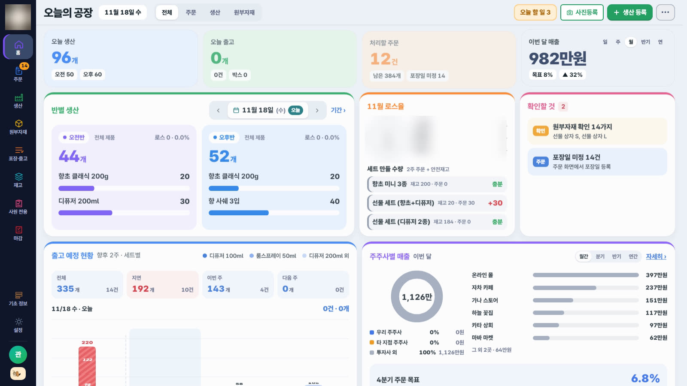
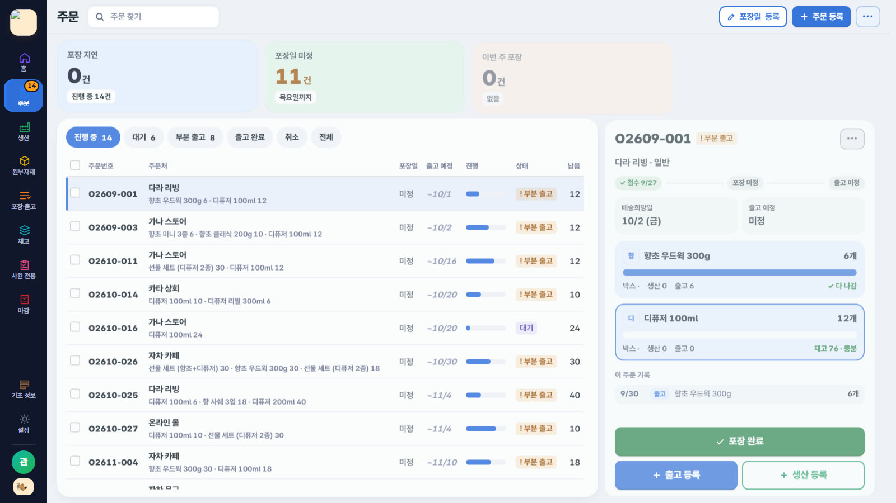
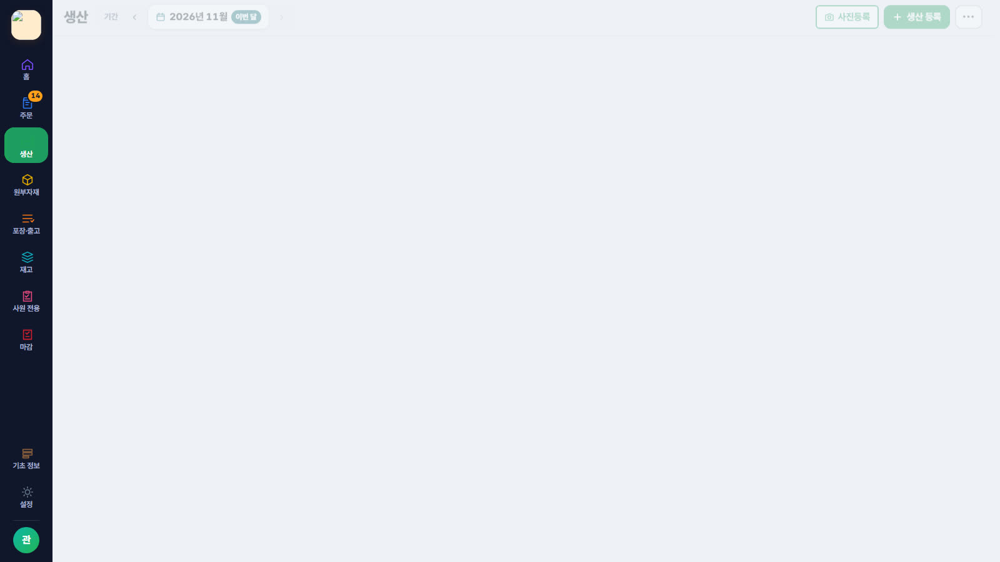
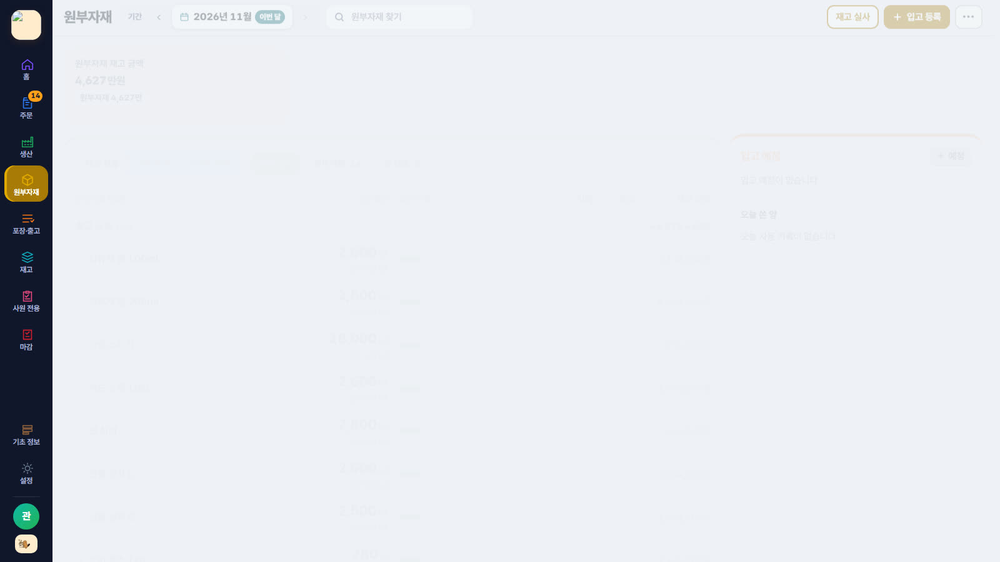
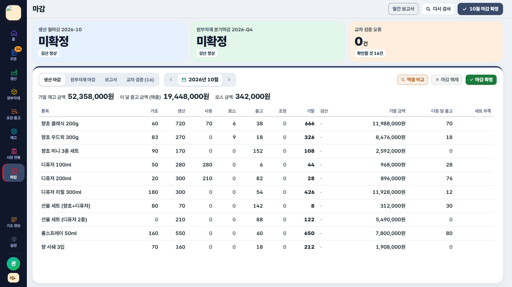
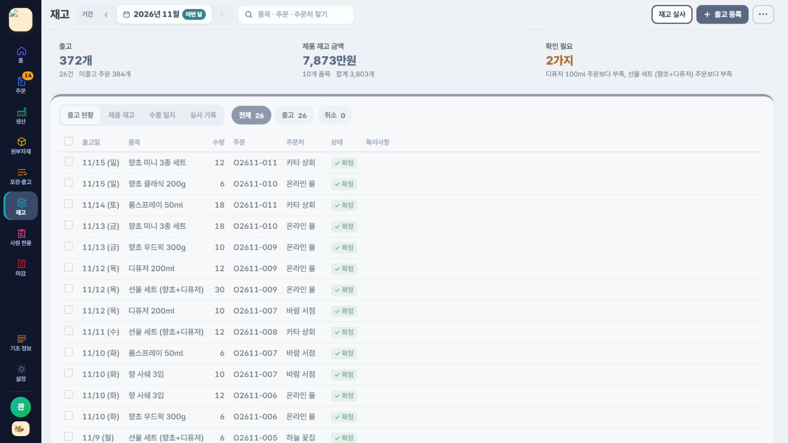
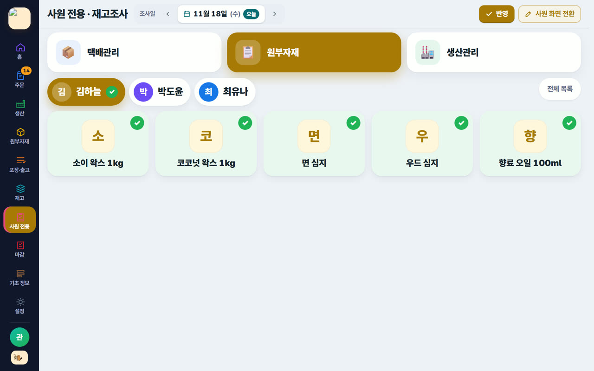
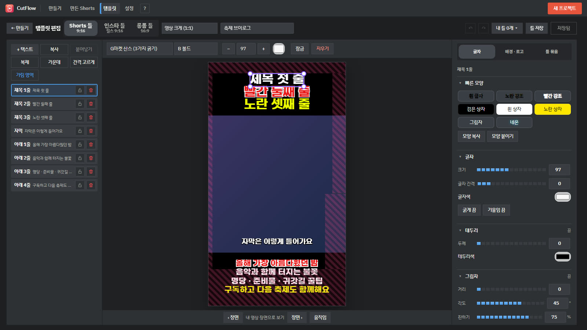
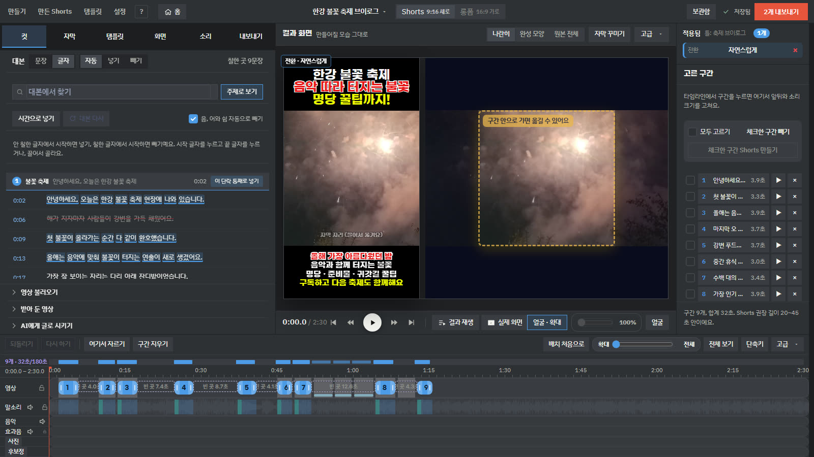

엑셀 여러 개로 나뉘어 있던 생산 · 재고 업무를 하나로 묶은 생산관리 프로그램과, 긴 영상에서 쇼츠를 빠르게 뽑아내는 영상 편집 프로그램입니다. 두 프로그램 모두 기획부터 화면 설계, 개발, 테스트, 설치 파일 배포까지 혼자 맡았고, 실제 업무에 쓰면서 계속 고치고 있습니다.
주문 → 생산 → 원부자재 → 출고 → 재고 → 마감을 하나의 데이터베이스로 잇는 통합 생산관리 프로그램입니다. 엑셀 일지와 손 계산으로 하던 재고 · 마감 업무를 화면 몇 번으로 끝나게 만들었고, 기존 엑셀 마감과 품목별로 자동 비교해 숫자가 맞는지 검증했습니다.







화면은 가상의 공방 데이터로 찍은 시연용입니다.
긴 영상을 불러오면 말을 글로 받아쓰고, 대본에서 원하는 문장을 칠하면 그 구간만 잘라 세로 쇼츠 · 인스타 릴스 · 롱폼으로 만들어 주는 편집기입니다. 캡컷 · 프리미어 프로를 참고해 컷 편집, 자막, 템플릿, 내보내기를 한 흐름으로 묶었습니다.


화면은 불꽃놀이 영상과 예시 대본으로 찍은 시연용입니다.